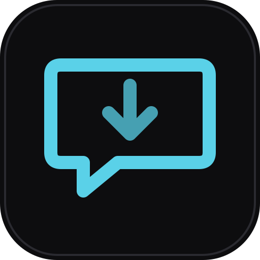

Every AI chat I've had, saved as tidy folders
Screenshots are on the way.
This app holds real personal data, so I'm filling a copy with made-up data to show it safely.
Reading the saved chats to pull the useful ideas into my notes.